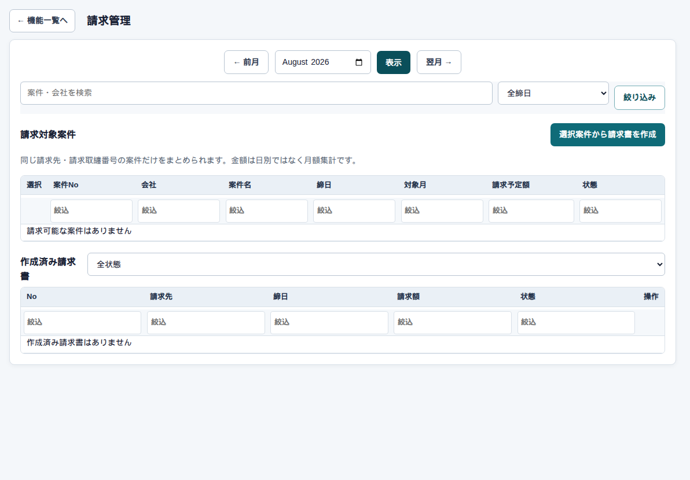

精算 → 請求
請求の一覧
まず、この画面
上段が「今月の案件（請求対象）」、下段が「すでに作った請求書」です。月次承認済みの日報が、本番の根拠になります。管理者・経営者・総務・営業・企業権限（自社分）が使えます。

下書きを作る
1件なら行の「下書き作成」。複数件はチェックして「選択案件から請求書を作成」です。まとめられるのは、請求先・取纏番号・締日が同じ案件だけです。
同じ請求先の2案件を1枚にする
両方にチェックを付けて作成します。条件が違うと警告が出て作れません。
作成済みを開く
下の表の「開く」が 請求書の詳細 です。状態で絞れます（作成中、営業確認済み、最終確定、取消済み）。
気をつけること
日報がまだでも行は出ます。ただし本番確定はできません。税のエラーが出ている行は下書きできません。